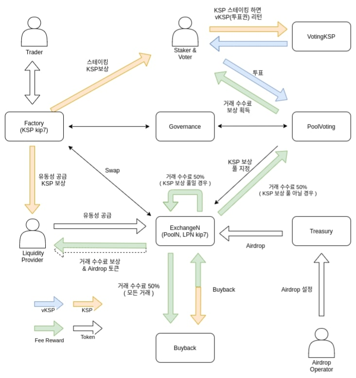

- 클레이
- KSP
- 오르빗 브릿지
Defi
클레이튼의 생태계는 거버넌스코인인 ksp와 협력해서 나아간다.거버넌스
코인이라 하면 예치이자,방향성 등등을 나타낸다.
오르빗 브릿지는 다른 코인의 생태계와 클레이튼 생태계의 다리 역활스왑을
가능하게 한다.
-
Liquidity Providers: You can provide liquidity by matching KLAY-KCT
pairs with the token contracts created in KLAYswap's Pool Menu. If
providing liquidity, you will receive a Liquidity Provider (LP) token as
a supply certificate. You will receive a reward share of the fees from
that respective pool as a contribution reward.
-
Traders: Tokens listed in the protocol can be traded with KLAY or KCT
within the scope of the respective pool. The transaction price is based
on the existent number of pairs of the respective tokens.
-
Stakers: The KSP stakers receive KSP mining reward by staking the KSP
token. The stakers are also able to receive vKSP token based on the
amount and staking period they choose.
-
Voters: The vKSP obtained after staking KSP can be used to vote for a
specific pool or pools to boost the mining rate on the pool. The voters
will receive 50% of the trading fees generated from the pool they voted
to.
